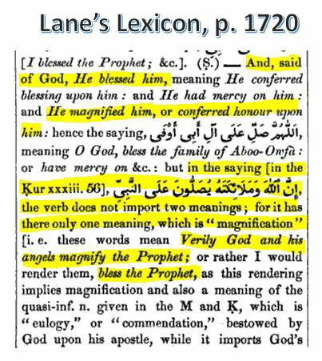
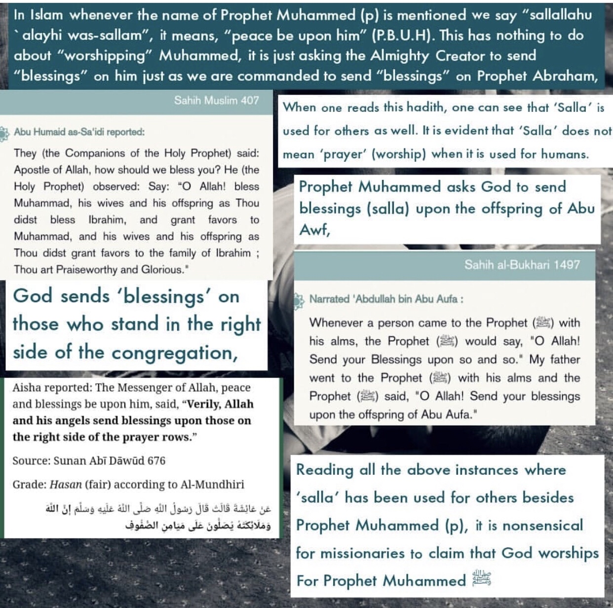
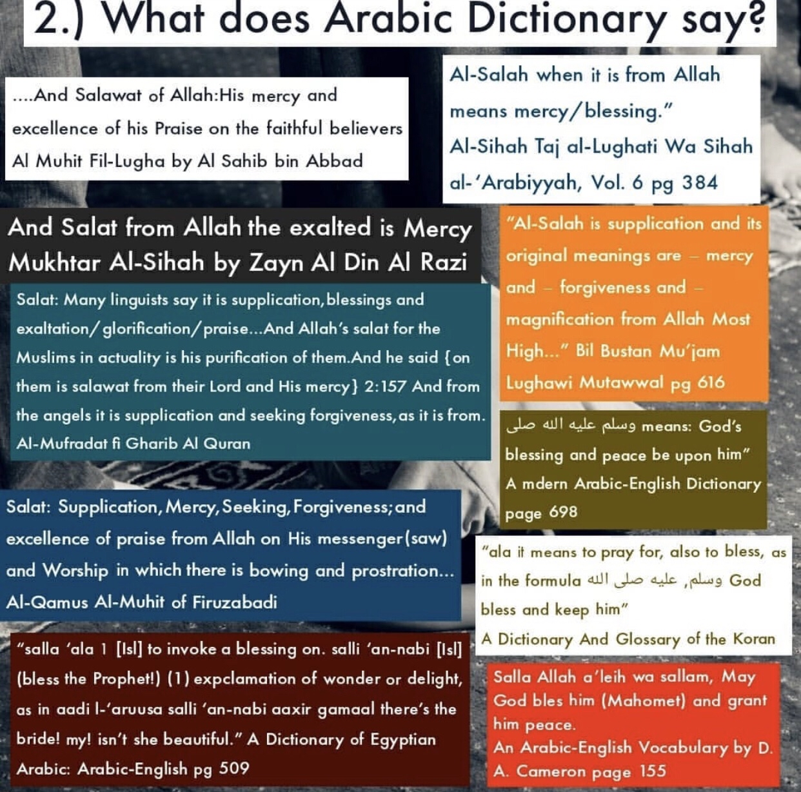
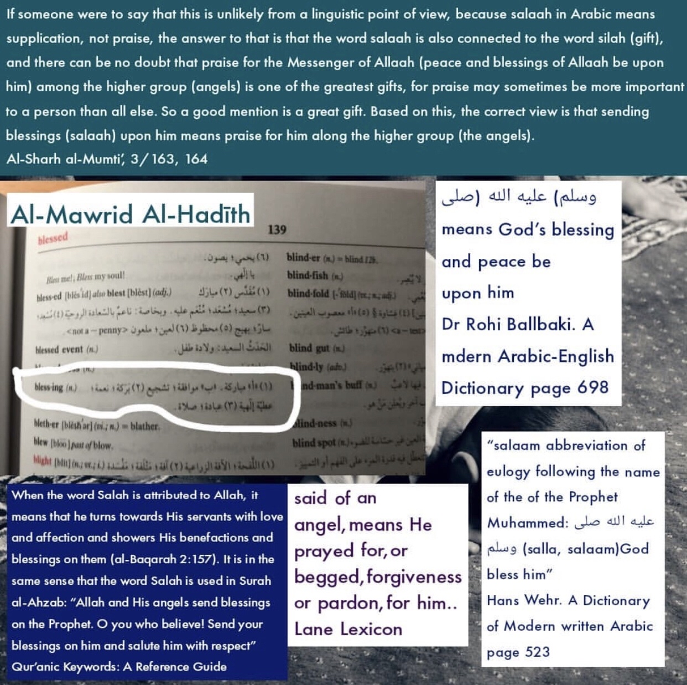
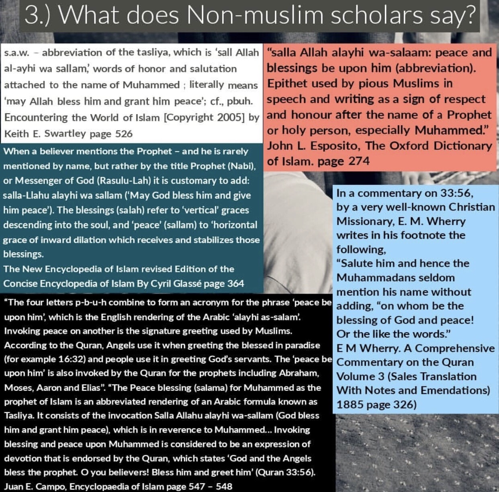
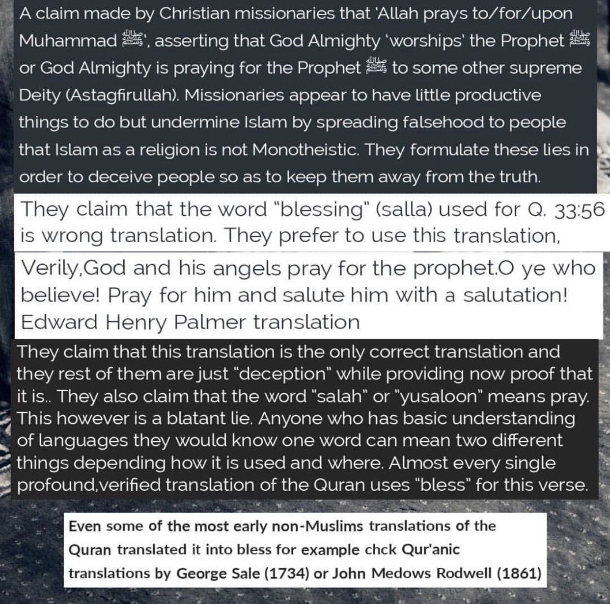
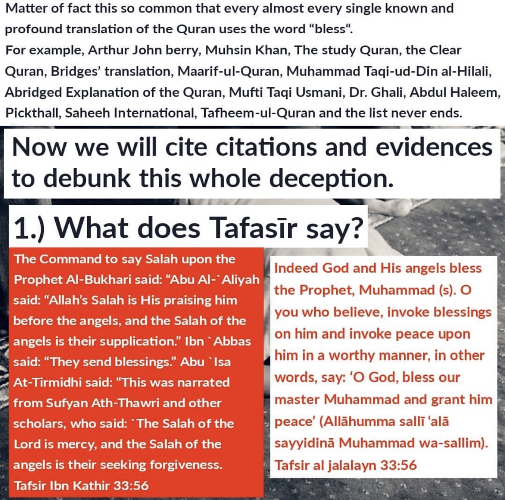
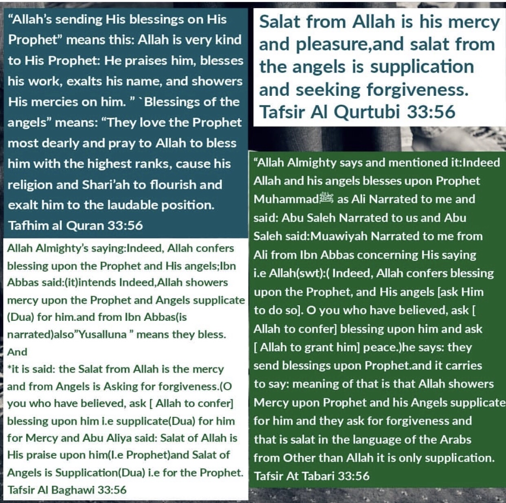
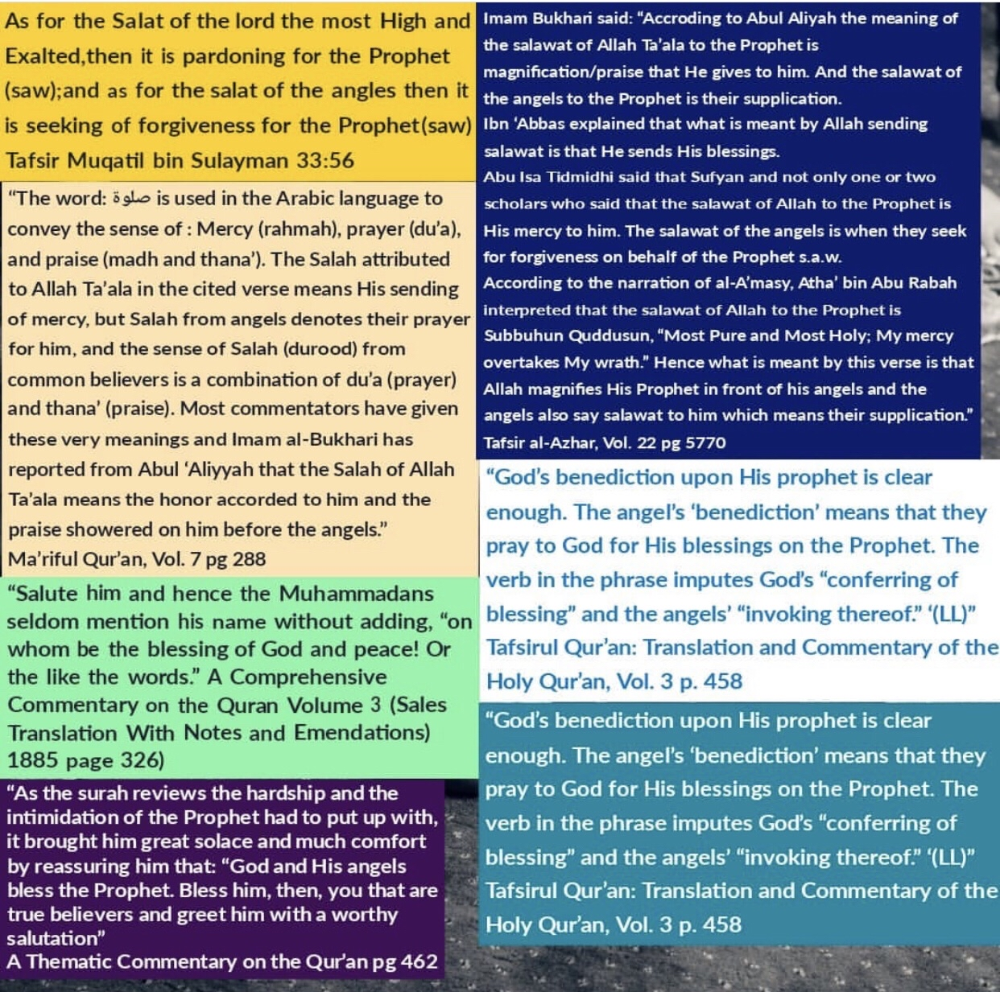
https://youtu.be/hhb2knPfGoc
Firstly, They also claim that the word “yusaloon” means pray. however this is a blatant lie, as you see the dictionaries above translate it as ”blessing or mercy” but here is more proof:
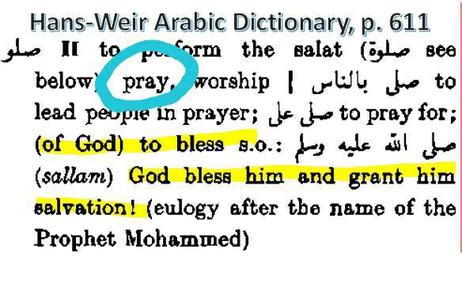
Secondly if you were to translate it as pray The word “pray” does not only mean worship/supplication for God when it’s been addressed to humans. So if God is praying for a individual, then this would imply God
is pleased with that individual. Rather than implying God is worshiping this individual. Likewise the context of the verse that is showing how God is pleased with his Messenger.
Thus the context of the verse would not entitle God is worshiping Muhammad صلى الله عليه وسلم but God is pleased with him.
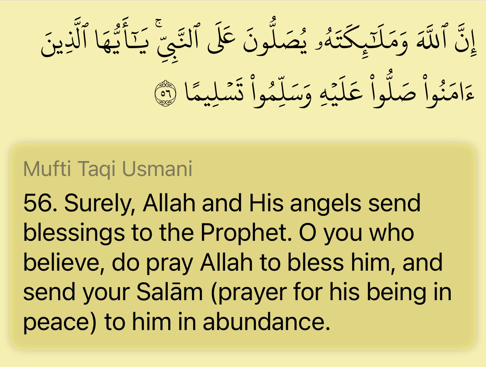
if salah means prayer this in contexts then the interpretation of it isnt in human terminology but divine to mean, it would mean praises for muhammad SAW and not the submissive literal prayer of a subordinate because allah dont literally pray to the creation.
Likewise when you pray for someone you aren’t submitting you’re will to that individual.
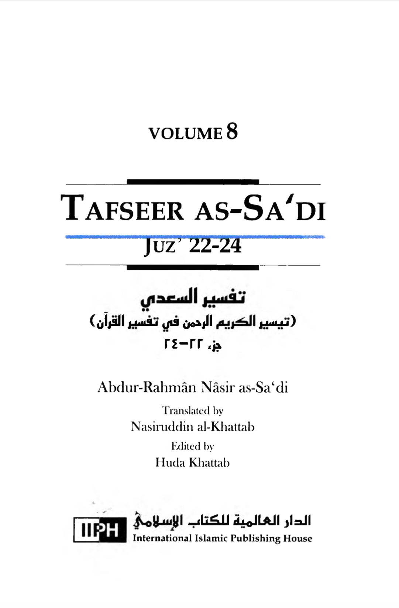
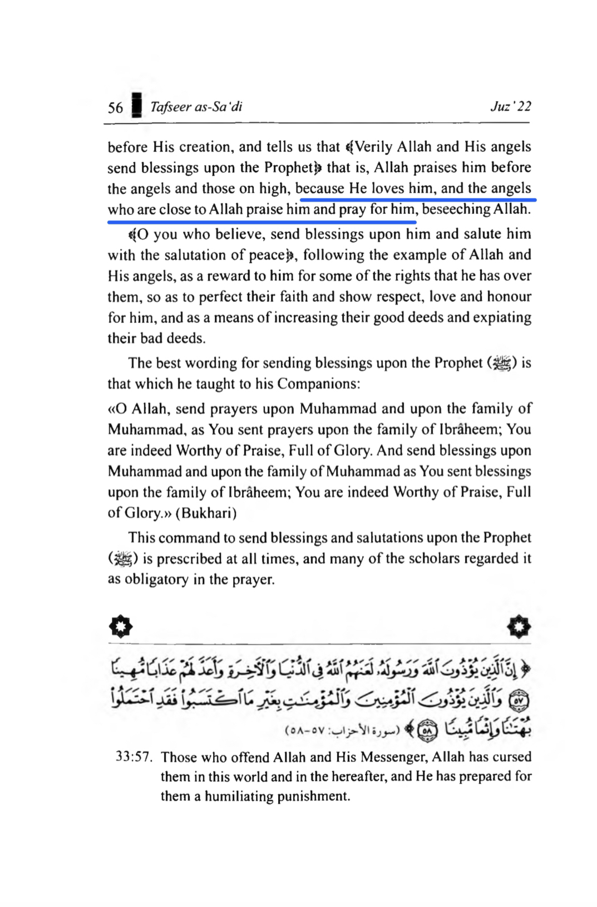